To the people saving wild lives. The machines doing extraordinary things. The mysteries beneath the surface. And the unexpected stories behind the world we live in.
Arcadia is an independent factual production company based in Halifax, Nova Scotia, Canada. For 25 years, we’ve created documentaries and series that entertain, enlighten, and surprise audiences worldwide.
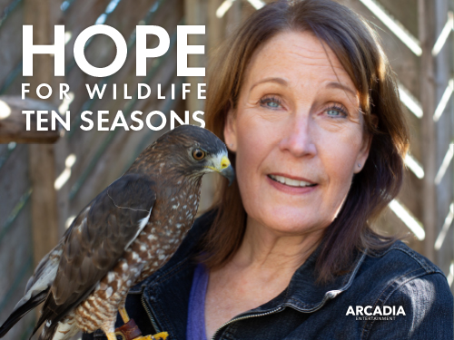
01
Wild LivesRescue & rehabilitation
02
Extraordinary MachinesHeavy marine engineering
03
Beneath the SurfaceOcean mysteries & wrecks
04
Unexpected StoriesThe human world
01 Our story
Curiosity takes us places.
From the ocean floor to heavy marine machinery and wildlife rehabilitation hospitals, we make television that brings audiences closer to the extraordinary.
Founded in Halifax, Nova Scotia, Canada in 2001, Arcadia has produced nearly 500 hours of award-winning factual series for Discovery, National Geographic, Smithsonian, CBC, Disney, and global networks across 140+ territories.
We combine bold visual ambition with seasoned production infrastructure, partnering with international broadcasters and co-producers to turn ambitious concepts into enduring television.
Field OperationsArcadia production crew on location filming historical drama-documentary
There is always another story worth finding.
Years of factual storytelling
25
Hours of programming in the catalogue
~500
Founded in Halifax, Nova Scotia, Canada
2001
Our programmes can be seen on
CBS
Disney
Discovery
History
CBC
Smithsonian
HBO
National Geographic
Animal Planet
02 Broadcast & Distribution Slate
Built for audiences. Ready for market.
From high-rating tough-jobs engineering to gripping maritime mysteries and enduring wildlife rescue, Arcadia produces factual series designed to travel globally.
We partner with international broadcasters and distributors on co-productions, acquisitions, and format development.
Following Hope Swinimer and her dedicated crew at a bustling wildlife rehabilitation hospital in Nova Scotia, Canada. Caring for thousands of injured and orphaned wild animals each year, this celebrated, heartfelt series has captivated viewers across 11 seasons worldwide.
An adrenaline-fueled look at colossal machinery built to conquer the sea—from mammoth tidal power turbines to deep-water salvage cranes—and the fearless crews who operate them in extreme conditions.
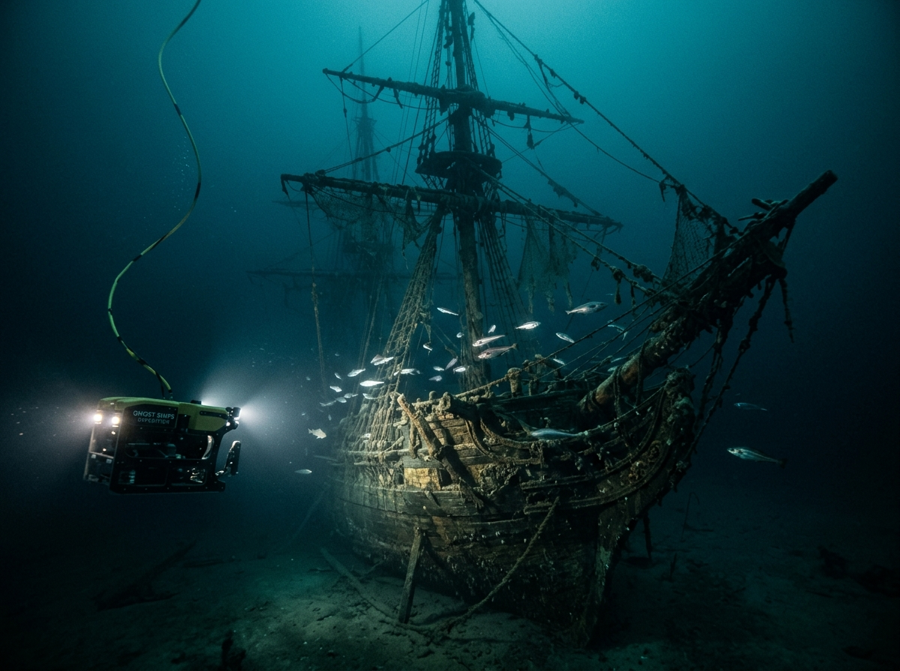
03Crime & Ocean Mysteries
Ghost Ships
Cold-case wrecks. Subsea forensics. Untold stories from the abyss.
Using advanced deep-water ROVs and maritime detective work, Ghost Ships investigates historical nautical disasters, vanished vessels, and the human mysteries preserved in deep-sea graveyards.
04History & Invention
How We Got
The accidents, obsessions, and breakthroughs that engineered modern life.
From skateboard polyurethane wheels to the global cold chain, this fast-paced factual series tracks the eccentric innovators and bizarre accidents behind everyday staples.
05Aerial & Geography
Canada Over the Edge / America Over the Edge
Spectacular high-definition aerial surveys of majestic coasts.
Sweeping ultra-HD aerial journeys revealing coastlines, islands, and borderlands from extraordinary vantage points, blending stunning cinematography with compelling geographical storytelling.
06History & Archaeology
Viking Quest
Uncovering Norse settlements on the Atlantic frontier.
Archaeologists and explorers track physical evidence and ancient navigational routes across Greenland and Atlantic Canada, unearthing the real story of Viking exploration 1,000 years ago.
From the catalogue
Selected titles from roughly 500 hours of factual programming.
Scroll or swipe
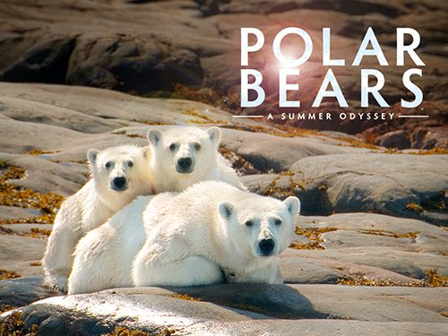
Polar Bears: A Summer OdysseyNatural history
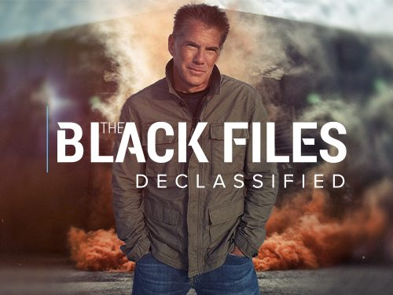
The Black Files DeclassifiedInvestigation
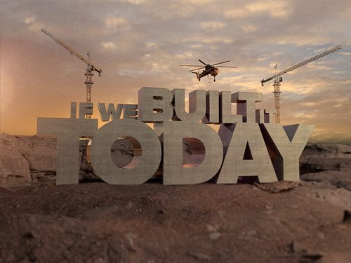
If We Built It TodayEngineering & history
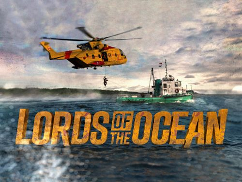
Lords of the OceanOcean adventure
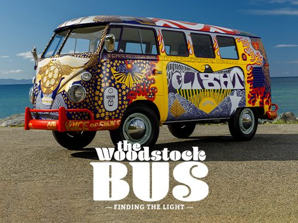
The Woodstock Bus: Finding the LightPop culture
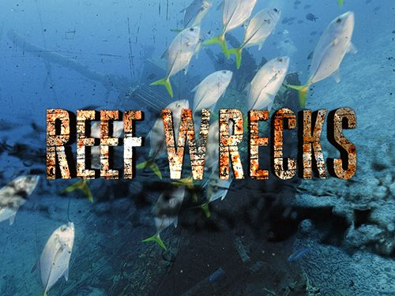
Reef WrecksUnderwater
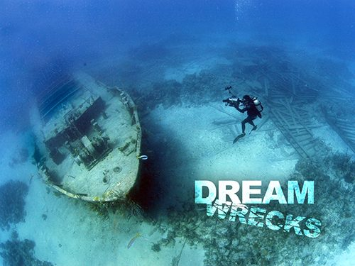
DreamwrecksUnderwater
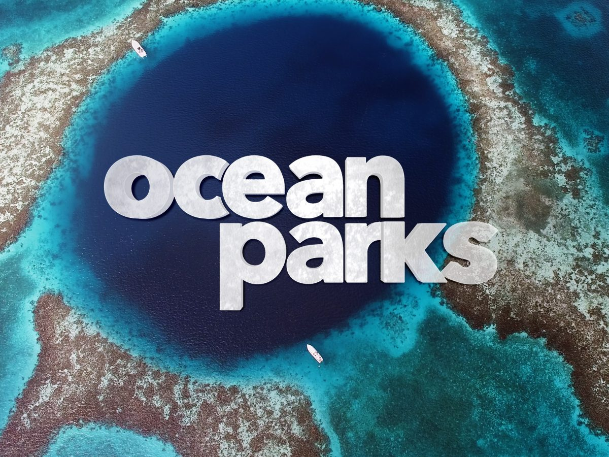
Ocean ParksMarine wildlife
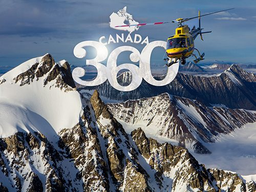
Canada 360Aerial
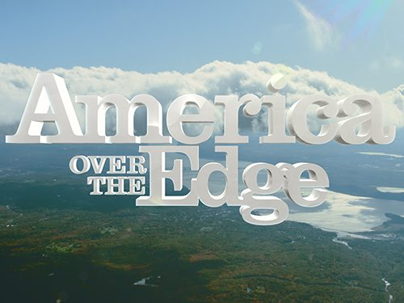
America Over the EdgeAerial
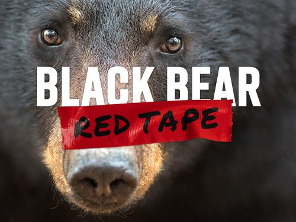
Black Bear, Red TapeWildlife
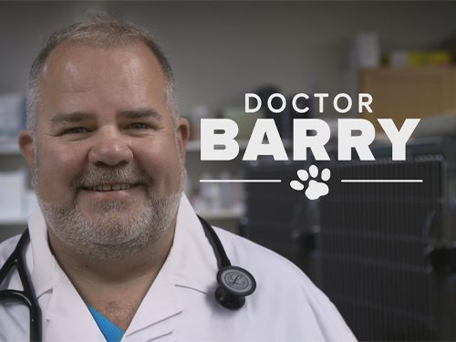
Doctor BarryWildlife
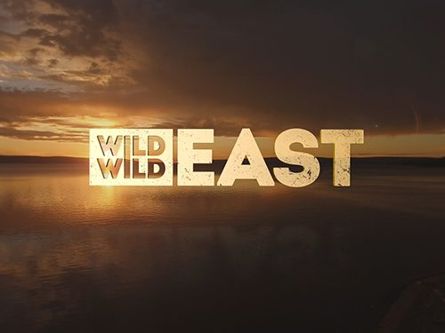
Wild Wild EastNatural history
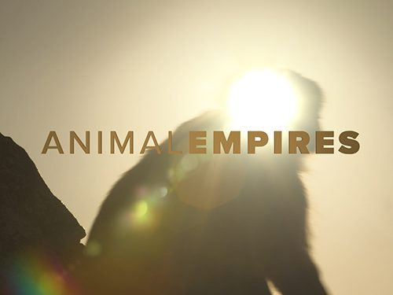
Animal EmpiresNatural history
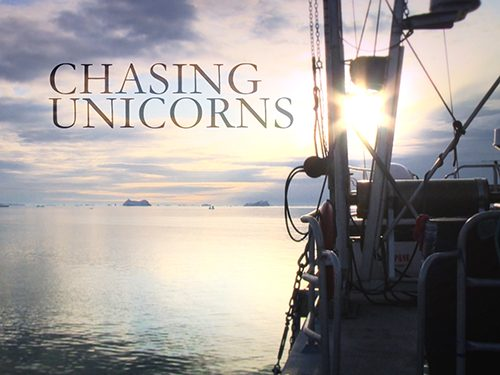
Chasing UnicornsArctic expedition
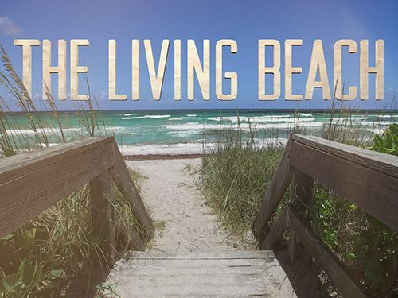
The Living BeachNature & science
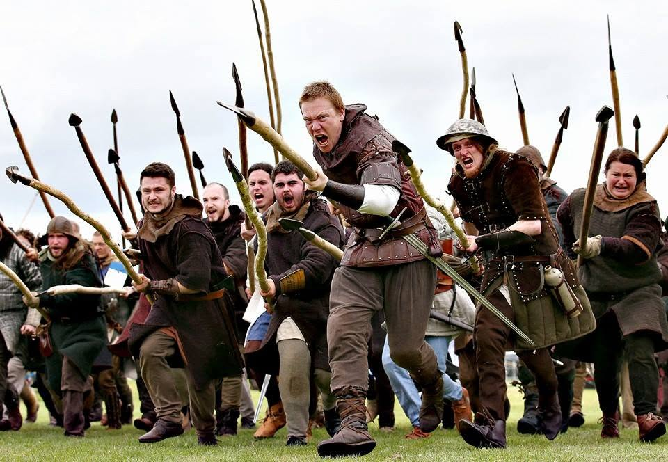
Battle of Kings: BannockburnHistory
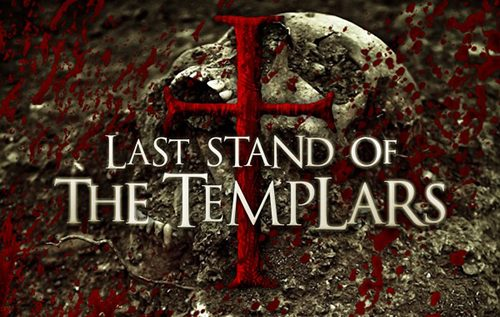
Last Stand of the TemplarsArchaeology
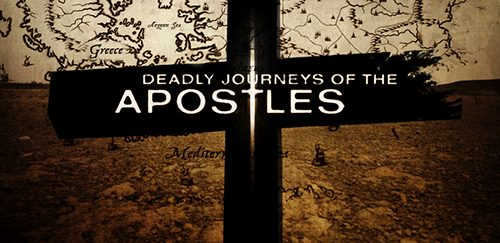
Deadly Journeys of the ApostlesHistory
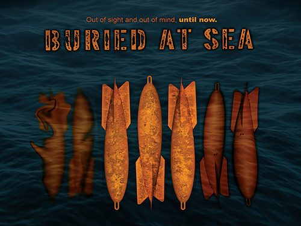
Buried at SeaInvestigation
Mabel Bell’s Aerial ExperimentHistory
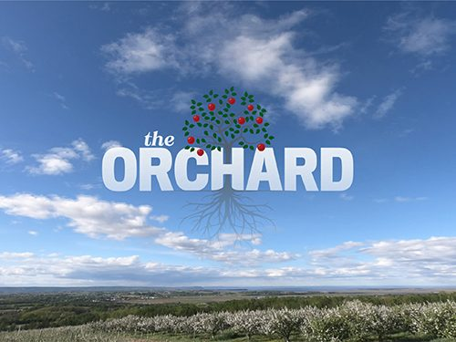
The OrchardDocumentary
03 Digital & Social Era
Timeless stories. Modern platforms.
Arcadia is transitioning from traditional broadcast exclusivity to bring our timeless 500-hour library to global audiences across YouTube, FAST streaming networks, and social platforms.
Archive Remastering
500 Hours of Factual IP
Genuine wildlife rescues, subsea wrecks, and extreme engineering are intrinsically timeless. We are re-mastering our deep catalogue into 4K YouTube serials, vertical narratives, and FAST channel packages.
Decades of authentic, evergreen footage
Community & Socials
Direct Fan Engagement
Audiences want closer access to real heroes like Hope Swinimer and marine specialists. By bringing our productions to social media, we build passionate, multi-generational global followings.
Multi-platform social storytelling
Digital Co-Ventures
Broadcaster & Creator Partnerships
We collaborate with digital networks, AVOD streamers, and distributors to develop social-first factual series backed by our 25-year broadcast-grade production expertise.
Agile, scalable co-productions
04 What we do
Extraordinary stories. Lasting value.
Arcadia creates, owns, and develops premium factual entertainment.
From Halifax, Nova Scotia, Canada, we bring 25 years of field-proven production experience to a 500-hour factual catalogue spanning wildlife, extreme engineering, maritime history, and science.
We build lasting intellectual property, structuring international co-productions and unlocking fresh value across streaming, FAST, and digital distribution.
Built for enduring audience appeal.
05 Library & Rights
A library with a future.
500 hours of broadcast factual programming, supported by an expansive production archive.
Decades of worldwide expeditions, rare wildlife access, and subsea discoveries offer immense opportunities for format remounts, international territory licensing, FAST syndication, and digital remastering.
Format development and long-running multi-season series.
We build scalable formats designed to expand through international adaptations, multi-season renewals, and platform extensions.
02
Library development
New programming from exceptional archival footage.
We combine deep editorial craft with 4K re-mastering workflows to repackage deep archival collections into fresh episodic strands.
03
AI & Smart Archiving
Intelligent cataloguing and rights-managed dataset licensing.
Deploying AI for automated metadata tagging and catalogue discovery, alongside legally robust training data licensing under clear provenance.
04
Global distribution
Flexible international rights and windowing strategies.
Active co-ventures with global distributors, linear channels, and streamers across North America, Europe, Asia, and Latin America.
06 Production partnerships
Your production. Our home ground.
Arcadia provides full-service production management, Canadian co-production structuring, and local line producing from Halifax, Nova Scotia, Canada.
We pair top-tier crew and specialist 4K underwater/aerial gear with comprehensive expertise in Canadian film tax credits (up to 45%+ net spend advantages) and treaty co-productions.
Proven international delivery
Turnkey field production for CNN's This Is Canada: Nova Scotia, Discovery US's Black Files Declassified, and advisory work on History's The Curse of Oak Island.
From complex offshore marine filming to high-security location access, our Halifax operations base handles the entire production lifecycle.
Maximize Canadian federal and provincial tax incentives.
Expert structuring of CAVCO, CMF, and Nova Scotia production incentives delivering up to 45%+ eligible labour and spend rebates for qualifying partners.
B
Elite Field Crews
Decades of ocean, aerial, and extreme-weather filming.
Direct access to veteran factual directors, underwater cinematographers, drone pilots, field sound, and post-production suites in Atlantic Canada.
C
Treaty Co-Productions
Official bilateral co-productions with international partners.
Broad experience navigating Canadian official co-production treaties with the UK, Europe, Australia, and worldwide partners.
D
Early Stage Co-Ventures
Bring us into your development slate early for feasibility and packaging.
The latest idea is always the best. Arcadia’s biggest and most ambitious factual projects are taking shape right now.
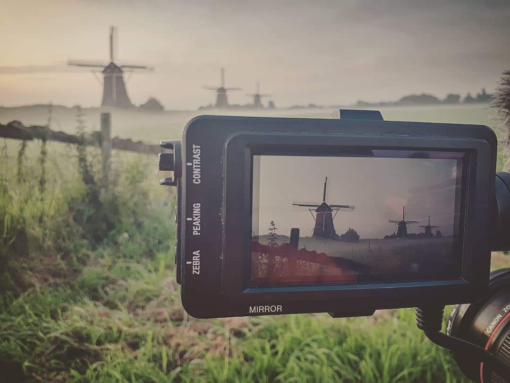
Looking AheadFocusing on the next horizon · Arcadia cinematography in the field
08 People
John Wesley Chisholm
Founder & Creative Director
John Wesley Chisholm founded Arcadia in Halifax in 2001. A producer, writer, and factual storyteller, he has spent 25 years creating internationally acclaimed documentary television.
From deep-sea shipwrecks to wildlife rehabilitation and extreme engineering, he leads Arcadia’s creative vision and development pipeline.
Our team
Arcadia unites veteran producers, writers, marine researchers, cinematographers, and editors with deep experience executing complex field productions worldwide.
David
Chris
Andrew
Sean
BBlanche
Bob
JJack
09 Contact
Let’s build the next story.
For broadcast commissions, international distribution, catalogue licensing, or co-productions in Canada:
We welcome conversations with buyers and partners worldwide.